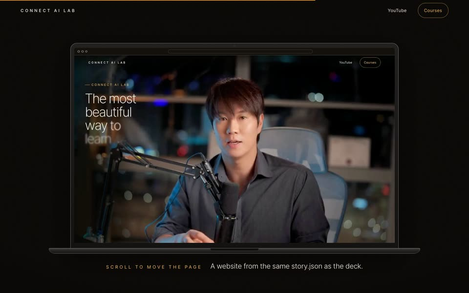
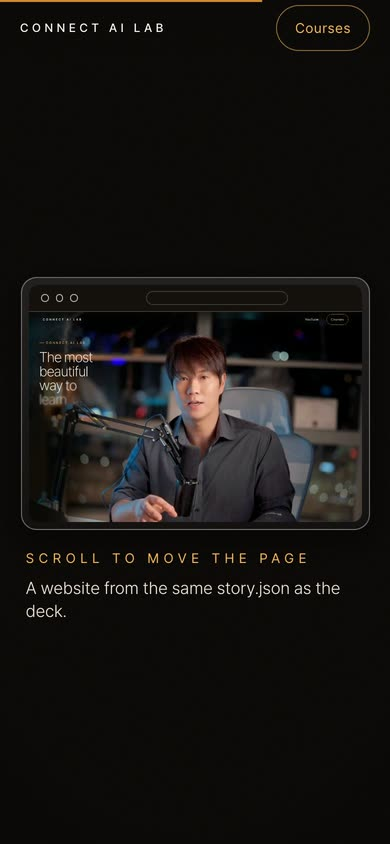

kit/device-laptop
A laptop drawn in CSS (no brand) opens its lid, then your long screenshot scrolls from top to bottom inside the screen with a small gold scroll thumb. On a web page the block stays pinned and your own scroll moves the page in the laptop; a video simply plays. The screen is two thirds of the slide width. On a phone it becomes a tall browser window. For screens, not for portraits.
src* · caption · kicker · seconds · poster · alt